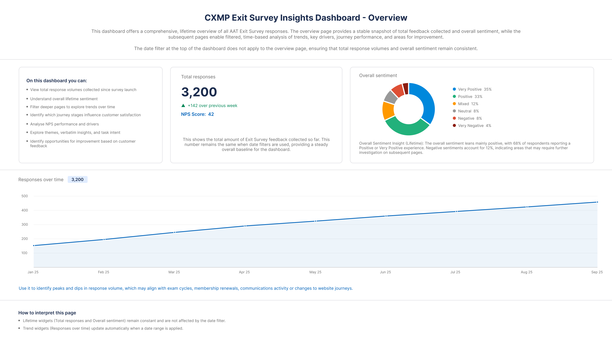
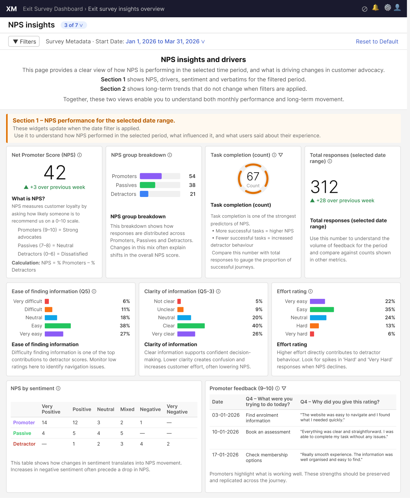

Research Operations
Customer Experience Measurement Programme
How I built a real-time feedback dashboard from scratch, and ran it solo for 9 months

The Problem
AAT had no way to track what customers were experiencing on their website in real time. Feedback was either lost or collected manually using spreadsheets, slow, inconsistent, and hard to act on. There was no system, no dashboard, and no process. I was brought in to fix that from scratch.
The dashboard had four main users, each with different needs. The Insights Lead and Junior UX Designer used it for monthly reporting, the Junior Designer pulls data from it to create a report that goes to platform managers, and it also feeds into a wider pillar report seen by the leadership team. The CX Manager used it to track ongoing experience issues. The CX Director needed quick, clear answers, especially around NPS. Designing for four different people with four different goals meant I had to think carefully about what each page showed and why.
What I Was Responsible For
- Built a 6-page dashboard system in Qualtrics from scratch
- Ran monthly research operations processing around 150 responses per month
- Worked with the Insight Lead to build a shared theme taxonomy
- Analysed customer feedback to spot platform issues
- Presented findings to the CX Director and stakeholders every two weeks
- Created an insights-to-action framework to drive real fixes
The Process: Manual to Automated
Phase 1 — Manual Operations (March–December 2025)
For 9 months I ran everything manually because stakeholders needed insights straight away. Every month I would export around 150 new responses, clean and process the data in Excel, use CoPilot to categorise themes, update the master spreadsheet, create an insights report, and present findings to stakeholders. It was time consuming, but it proved the value of the system and built buy-in for automation.
Phase 2 — Building the Dashboard
While keeping the monthly operations running, I designed and built the automated dashboard in Qualtrics. This meant designing the 6-page architecture, building data visualisations and filters, testing with stakeholders, and documenting how to use it.
Phase 3 — Automation Launch (January 2026)
The dashboard went live in January 2026. Stakeholders can now access real-time insights without any manual work from me. 9 months of tracked data, all in one place.

The 6-Page Dashboard
The six pages aren't random, they're grouped around the types of insight each user actually needs. For example, the CX Director tracked NPS closely, but they didn't just want a number. They needed to understand what was driving it, so I connected NPS to sentiment and task completion data on the same page. That way, they could see the full picture in one place without digging around.
Each page was designed for a different audience and decision-making need:
-
01 Executive Summary
High-level overview for leadership. Total responses, overall sentiment, and trends over time.
-
02 Overall Experience & Journey Insights
Deep dive into NPS, task completion, ease of navigation, content clarity, and sentiment.
-
03 NPS Insights & Drivers
Current period NPS with sentiment and verbatim feedback, plus long-term trend data.
-
04 Task Intent & Page Location
Maps what customers were trying to do and where they were on the site — critical for finding high-friction pages.
-
05 Themes & Opportunities
This page is still in progress. Currently, themes are identified manually using Excel and CoPilot, and supported by insights from other dashboard pages, such as Task Intent and NPS. Fully integrating this into the dashboard is the next priority.
-
06 Verbatim Explorer
Searchable interface for reading raw customer comments (planned).
Design Decisions
A few things I had to figure out as I went:
- I kept the layout simple on purpose. Stakeholders weren't data experts, so I stripped out anything that would confuse rather than help.
- I tested early versions with the people who'd actually use it. For example, the Junior UX Designer needed to quickly pull specific data for her monthly report, so I made sure the filters made it as easy as possible.
- I made sure filters were easy to find so stakeholders could answer their own questions without coming back to me every time.
Real Impact
The dashboard doesn't just report data, it drives real fixes.
The manual theme analysis, done in Excel alongside the dashboard, yielded some of the biggest insights. For example, navigation frustration showed up repeatedly across multiple responses. Cross-referencing this with the Task Intent page confirmed that task completion was low in key areas. This directly led to my Quick Links project, where I surfaced important pages more prominently. Those pages drive revenue, so getting customers there faster had a real commercial impact.
What I Learnt
- Prove value before scaling Running manually for 9 months showed the system worked before investing in automation.
- Balance operations and building Delivering monthly insights while building the future system showed stakeholders I could ship.
- Collaboration amplifies impact Working with the Insight Lead on theme categories created cross-functional alignment.
- Insights need action Data means nothing without a framework that drives actual platform fixes. The manual theme analysis was the clearest example of this, spotting that navigation was a top frustration led directly to a separate project that improved how customers find revenue-driving pages on the site.
What's Next
- Building the dashboard for the feedback button survey (915 responses ready)
- Completing the Themes & Opportunities page
- Designing the Verbatim Explorer for qualitative research
- Training more stakeholders to use the dashboard independently